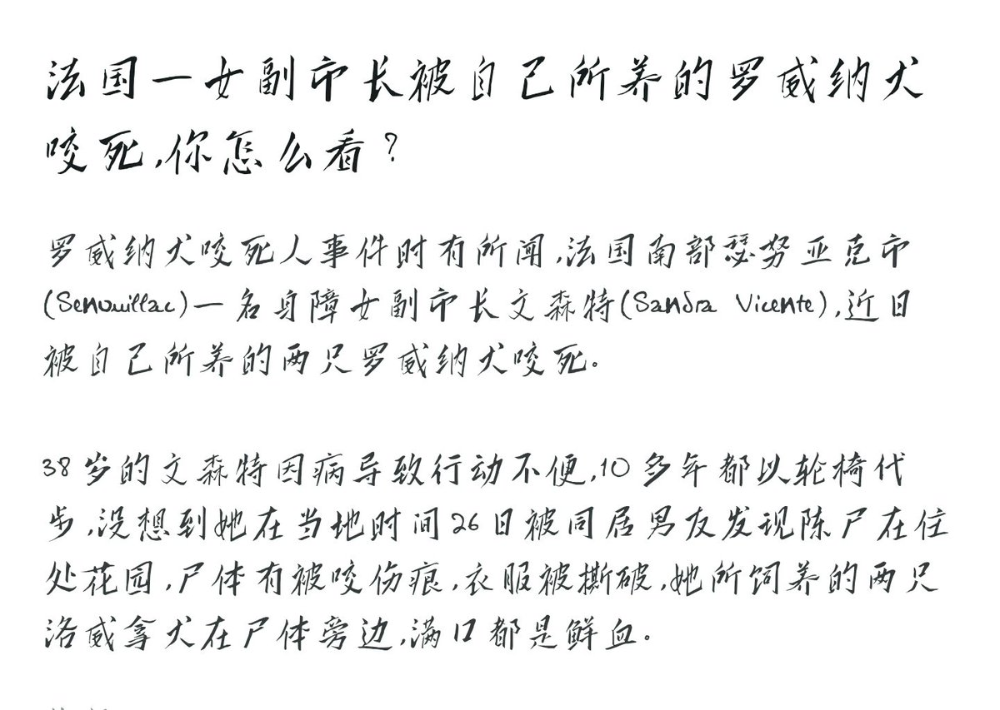

432InfantryRegiment
@432Ifantrygroup
@mayla515 其实这种思维并不是很对，因为狗的所谓忠诚也是动物性的，不要把它浪漫化，否则是会有危险的。
我们说一些狗的智商的确相当于三岁小孩，但他们的思维逻辑并不能等同于三岁小孩。作为同样养宠的家长我想对养宠人说的就是请不要把他们当成人和孩子，你要认识到他们是动物，这对你们和他们都好。

斑斑豹梦女
@mayla515
所以我真的很难理解一个有人性的人为什么会恨狗对狗污名化并且试图把所有爱狗人士当成敌人 又或者正是因为灵魂里“人性”的成分太多了才缺少了对爱的感受力吗 https://t.co/VpNJybPZs9